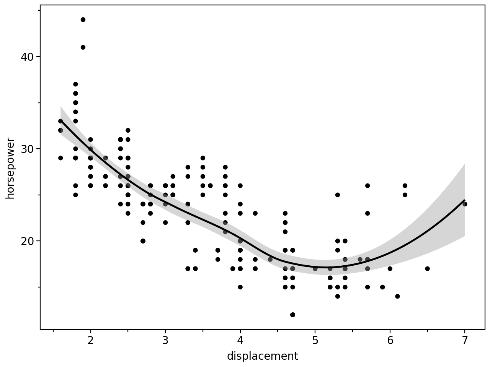
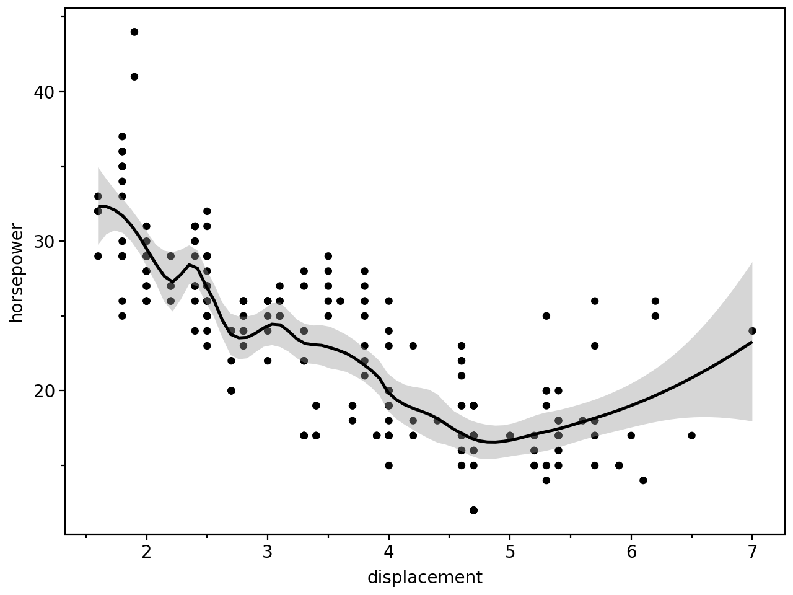
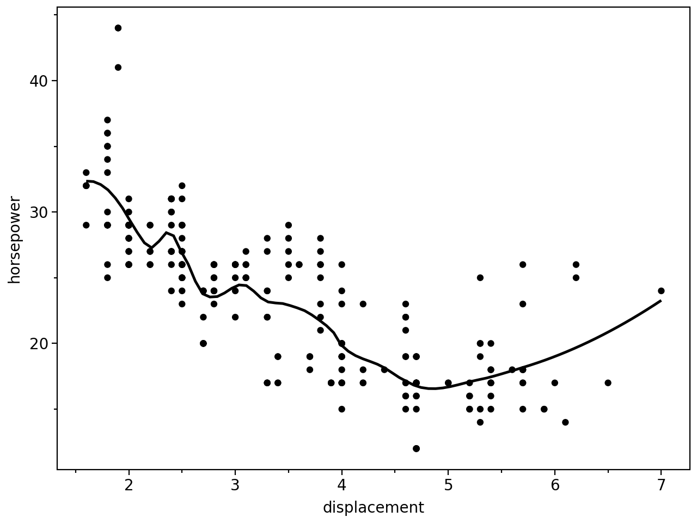
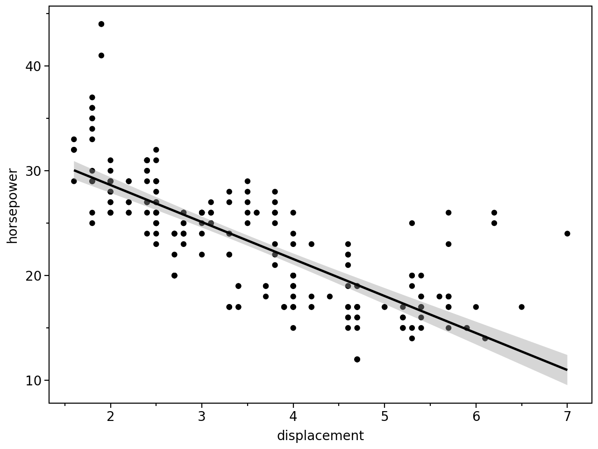
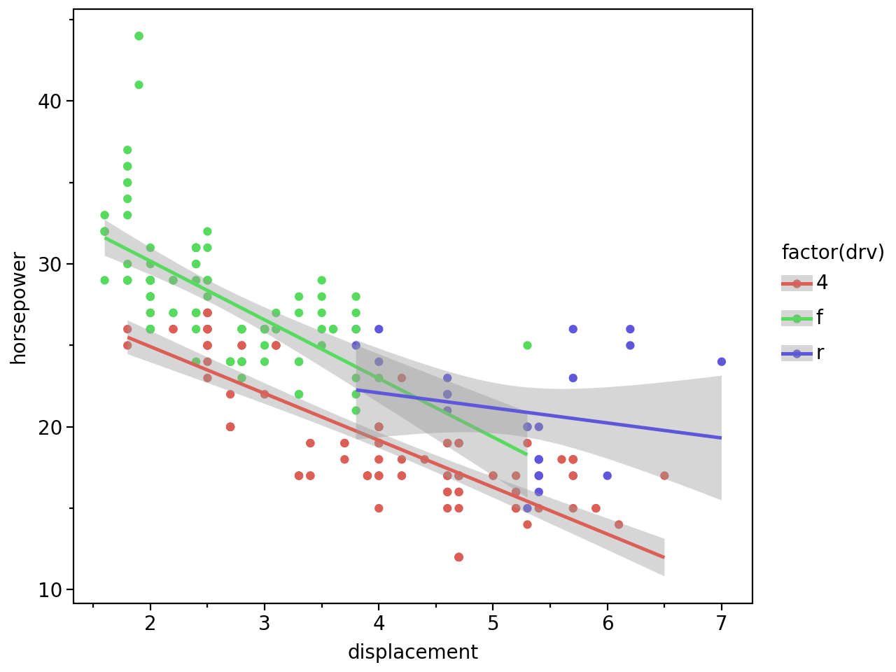

from plotnine import ggplot, aes, geom_point, geom_smooth, labs, theme_matplotlib, theme_set
from plotnine.data import mpg
theme_set(theme_matplotlib())Smoothed conditional means
Aids the eye in seeing patterns in the presence of overplotting.
mpg.head()| manufacturer | model | displ | year | cyl | trans | drv | cty | hwy | fl | class | |
|---|---|---|---|---|---|---|---|---|---|---|---|
| 0 | audi | a4 | 1.8 | 1999 | 4 | auto(l5) | f | 18 | 29 | p | compact |
| 1 | audi | a4 | 1.8 | 1999 | 4 | manual(m5) | f | 21 | 29 | p | compact |
| 2 | audi | a4 | 2.0 | 2008 | 4 | manual(m6) | f | 20 | 31 | p | compact |
| 3 | audi | a4 | 2.0 | 2008 | 4 | auto(av) | f | 21 | 30 | p | compact |
| 4 | audi | a4 | 2.8 | 1999 | 6 | auto(l5) | f | 16 | 26 | p | compact |
(
ggplot(mpg, aes(x="displ", y="hwy"))
+ geom_point()
+ geom_smooth()
+ labs(x="displacement", y="horsepower")
)
Use span to control the “wiggliness” of the default loess smoother. The span is the fraction of points used to fit each local regression: small numbers make a wigglier curve, larger numbers make a smoother curve.
(
ggplot(mpg, aes(x="displ", y="hwy"))
+ geom_point()
+ geom_smooth(span=0.3)
+ labs(x="displacement", y="horsepower")
)
You can remove confidence interval around smooth with se=False:
(
ggplot(mpg, aes(x="displ", y="hwy"))
+ geom_point()
+ geom_smooth(span=0.3, se=False)
+ labs(x="displacement", y="horsepower")
)
Instead of a loess smooth, you can use any other modelling function:
(
ggplot(mpg, aes(x="displ", y="hwy"))
+ geom_point()
+ geom_smooth(method="lm")
+ labs(x="displacement", y="horsepower")
)
Points & Linear Models
# Gallery, points
(
ggplot(mpg, aes(x="displ", y="hwy", color="factor(drv)"))
+ geom_point()
+ geom_smooth(method="lm")
+ labs(x="displacement", y="horsepower")
)